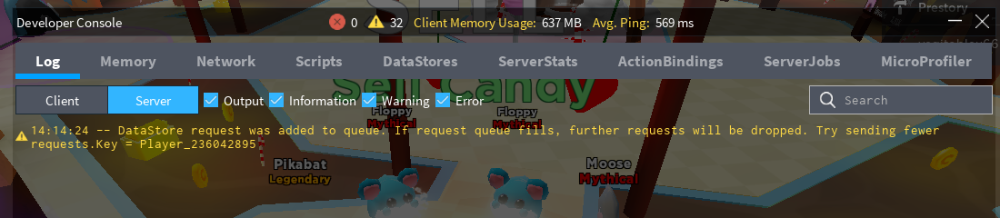

Troubleshooting
Whether you're still writing your game code or already ran into a problem while using ProfileService, this page is a valuable resource for avoiding several crucial mistakes.
Problems in Roblox studio testing
By default, data saved with ProfileService in Roblox Studio will not persist. This can be changed by enabling studio access to API services.
Warning
When studio access to API services is enabled, ProfileService will write to live DataStore keys of the game you're editing (unless ProfileStore.Mock is used) and you might accidentally make unwanted changes to your game's saved data. For more info, check the official documentation.
Saving data which Roblox cannot serialize
I've made the decision to opt-out Profile.Data and Profile.MetaData.MetaTags automatic checking
for unserializable data types for efficiency reasons. Consequently, you must be aware of what you
MUST AVOID writing inside Profile.Data or Profile.MetaData.MetaTags, directly and inside any nested tables:
NaNvalues - you can check if a number isNaNby comparing it with itself -print(NaN == NaN) --> false(e.g.,Profile.Data = {Experience = 0/0}).NaNvalues are a result of division by zero and edge cases of some math operations (math.acos(2)is-NaN).- Table keys that are neither strings nor numbers (e.g.,
Profile.Data[game.Workspace] = true). - Mixing string keys with number keys within the same table (e.g.,
Profile.Data = {Coins = 100, [5] = "yes"}). - Storing tables with non-sequential indexes (e.g.,
Profile.Data = {[1] = "Apple", [2] = "Banana", [3546] = "Peanut"}). If you really have to store non-sequential numbers as indexes, you will have to turn those numbers intostringindexes:Profile.Data.Friends[tostring(user_id)] = {GoodFriend = true}. - Storing cyclic tables (e.g.,
Profile.Data = {Self = Profile.Data}). - Storing any
userdataincludingInstance,Vector3,CFrame,Udim2, etc. Check whether your value is auserdataby runningprint(type(value) == "userdata")(e.g.,Profile.Data = {LastPosition = Vector3.new(0, 0, 0)}) - For storage, you will have to manually convert youruserdatato tables, numbers and strings for storage (e.g.,Profile.Data = {LastPosition = {position.X, position.Y, position.Z} }).
This is a limitation of the DataStore API which ProfileService is based on.
Warning
Failure to prevent these data types may result in silent data loss, silent errors, fatal errors and overall failure to save data.
Profiles take over 7 seconds to load
Notice
Due to technical limitations, it's expected that at least 5% of the time, when the player hops servers rapidly, the profile
can take up to 7 seconds to load (Can be greatly improved by using [Profile:ListenToHopReady()](/ProfileService/api/#profilelistentohopready)).
If implemented correctly, ProfileService will load profiles as fast as the Roblox API allows
it when the player joins a server without a server hop. It's recommended to release profiles right before universe teleports
to speed up session lock releasing and further preventing time penalties related to server hopping as much as possible.
If your profiles load slower than 7 seconds on a constant basis, continue reading this topic.
MAKE SURE YOUR ProfileService MODULE IS UP TO DATE
Just to be clear, ProfileService is not a module that trades in speed for security - if implemented properly, your profiles must usually load within 1 to 2 seconds - that's how long a single DataStore UpdateAsync call will take.
The problem
More often than not, ProfileStore:LoadProfileAsync() is taking a clearly longer than usual amount of time to load, usually 7 seconds or much more.
local start_time = tick()
ProfileStore:LoadProfileAsync(profile_key)
print(tick() - start_time) --> A value over 10 seconds
The culprit
- Is your code really releasing your profiles after it's done working with them?
- Are you releasing your profiles immediately after the player leaves the game?
- If teleporting between places in your game (universe), are you using Profile:ListenToHopReady()?
Functions connected to Players.PlayerRemoving can be tricky to notice errors for because, when testing alone, you will be leaving the game before the errors appear on the developer console.
If a player hops to another server (Server 2) before the previous one (Server 1) releases (removes session-lock from) the player's Profile,
Server 2 will wait until Server 1 releases the Profile. ProfileService checks the session-lock state of profiles every 7 seconds during a ProfileStore:LoadProfileAsync() call and this will immediately slow down Profile loading very noticably. This is what we would call a race condition.
Mistake example #1:
Players.PlayerRemoving:Connect(function(player)
local profile = Profiles[player]
if profile ~= nil then
progile:Release() -- "progile" IS A TYPO!
end
end)
.PlayerRemoving event.
Mistake example #2:
Players.PlayerRemoving:Connect(function(player)
local profile = Profiles[player]
if profile ~= nil then
SaveData(profile) -- Are you sure this function doesn't error?
profile:Release()
end
end)
.PlayerRemoving.
Disclaimer: I don't advise modifying
Profile.Dataafter the player leaves - it's a bad practice in securing your data. You should always store data in a way where unexpectedly losing access to writing toProfile.Data(e.g. server crash) would not cause massive data loss.
Mistake example #3:
Players.PlayerRemoving:Connect(function(player)
local profile = Profiles[player]
if profile ~= nil then
wait(1) -- Or any function with "Wait", "Async" or "Yield" in its name
profile:Release()
end
end)
wait(1) is bad in this example), otherwise you risk creating a race condition where another server that the player joined is trying to load a Profile that hasn't been released yet.
Mistake example #4:
local profile_key, update_handler
-- This simulates excessive UpdateAsync calls for the same Profile key:
for i = 1, 6 do
ProfileStore:GlobalUpdateProfileAsync(profile_key, update_handler)
end
Profile.Data (latter is mostly possible only if the Profile is loaded in the same session as :GlobalUpdateProfileAsync() is called). This is due to a queue
system that executes every write request for the Profile every 7 seconds - if this queue grows larger than the BindToClose timeout (approx. 30 seconds), some requests in the queue can be lost after the game shuts down.
How to be sure my profiles are being released?
Add a print():
Players.PlayerRemoving:Connect(function(player)
local profile = Profiles[player]
if profile ~= nil then
profile:Release()
print(player.Name .. "'s profile has been released!")
end
end)
Profile loading issues, this is the first thing you should do. Check the developer console for the print and any other possible errors.
When ProfileStore:LoadProfileAsync() finishes loading in...
- less than 2 seconds - You're good!
- 7 to 30 seconds - Most likely a player server hop race condition (Mistake example #3)
- Over 60 seconds - The previous server is not releasing the profile / Dead session lock (Mistake examples #1, #2 and #4)
DataStore warnings caused by ProfileService

"DataStore request was added to queue. If request queue fills, further requests will be dropped. Try sending fewer requests. Key = XXXXXX"
Is this really bad?
If you're only getting one or two warnings every couple of minutes or so, most likely not. Since March 2021 the ProfileService module now uses a custom queue system which greatly reduces Roblox API queue warnings.
What does this warning mean?
As of writing this guide (July 2020), based on a DevForum thread, Rapid successive UpdateAsync calls will be throttled by the DataStoreService and added to a queue:
Throttling queues
Every actual budget type (GetAsync, SetIncrementAsync, GetSortedAsync, OnUpdateAsync, SetIncrementSortedAsync) has its own throttling queue. Each of these five throttling queues has a queue size of 30 throttled requests max. Throttled requests are added to the queue of the corresponding budget type that it consumes.
When will you get warnings
Queue warnings can no longer be caused by faulty use of ProfileService as of March 2021 (Go update now you bastard). I expect these warnings to sometimes pop up during game startup or huge lag spikes / mild API outages.